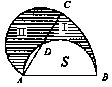

第二讲 不规则图形面积的计算（二）
不规则图形的另外一种情况，就是由圆、扇形、弓形与三角形、正方形、长方形等规则图形组合而成的，这是一类更为复杂的不规则图形，为了计算它的面积，常常要变动图形的位置或对图形进行适当的分割、拼补、旋转等手段使之转化为规则图形的和、差关系，同时还常要和“容斥原理”（即：集合A与集合B之间有：SA∪B＝SA＋Sb-SA∩B）合并使用才能解决。
例1 如右图，在一个正方形内，以正方形的三条边为直径向内作三个半圆.求阴影部分的面积。
解法1：把上图靠下边的半圆换成（面积与它相等）右边的半圆，得到右图.这时，右图中阴影部分与不含阴影部分的大小形状完全一样，因此它们的面积相等.所以上图中阴影部分的面积等于正方形面积的一半。
解法2：将上半个“弧边三角形”从中间切开，分别补贴在下半圆的上侧边上，如右图所示.阴影部分的面积是正方形面积的一半。解法3：将下面的半圆从中间切开，分别贴补在上面弧边三角形的两侧，如右图所示.阴影部分的面积是正方形的一半.
例2 如右图，正方形ABCD的边长为4厘米，分别以B、D为圆心以4厘米为半径在正方形内画圆，求阴影部分面积。
解：由容斥原理
S阴影＝S扇形ACB＋S扇形ACD-S正方形ABCD
例3 如右图，矩形ABCD中，AB＝6厘米，BC＝4厘米，扇形ABE半径AE＝6厘米，扇形CBF的半CB=4厘米，求阴影部分的面积。
解：S阴影＝S扇形ABE+S扇形CBF-S矩形ABCD
＝13π-24=15（平方厘米）（取π=3）。
例4 如右图，直角三角形ABC中，AB是圆的直径，且AB＝20厘米，如果阴影（Ⅰ）的面积比阴影（Ⅱ）的面积大7平方厘米，求BC长。
分析 已知阴影（Ⅰ）比阴影（Ⅱ）的面积大7平方厘米，就是半圆面积比三角形ABC面积大7平方厘米；又知半圆直径AB＝20厘米，可以求出圆面积.半圆面积减去7平方厘米，就可求出三角形ABC的面积，进而求出三角形的底BC的长.
＝（157-7）×2÷20
=15（厘米）。
例5 如右图，两个正方形边长分别是10厘米和6厘米，求阴影部分的面积。
分析 阴影部分的面积，等于底为16、高为6的直角三角形面积与图
的以6为半径的圆的面积。
解：S阴影=S三角形ACD-（S正方形BCDE-S扇形EBD）
=48-9（取π＝3）=39（平方厘米）。
例6 如右图，将直径AB为3的半圆绕A逆时针旋转60°，此时AB到达AC的位置，求阴影部分的面积（取π=3）.

解：整个阴影部分被线段CD分为Ⅰ和Ⅱ两部分，以AB为直径的半圆被弦AD分成两部分，设其中AD右侧的部分面积为S，由于弓形AD是两个半圆的公共部分，去掉AD弓形后，两个半圆的剩余部分面积相等.即Ⅱ=S，由于：
Ⅰ+S=60°圆心角扇形ABC面积
<
例7 如右图，ABCD是正方形，且FA=AD=DE=1，求阴影部分的面积.
例8 如下页右上图，ABC是等腰直角三角形，D是半圆周上的中点，BC是半圆的直径，且AB=BC=10，求阴影部分面积（π取3.14）。
解：∵三角形ABC是等腰直角三角形，以AC为对角线再作一个全等的等腰直角三角形ACE，则ABCE为正方形（利用对称性质）。
∴S阴影＝（S正方形ABCE+S半圆-S△ADE÷2
＝（100+39.25-75）÷2
＝64.25÷2
＝32.125.
总结：对于不规则图形面积的计算问题一般将它转化为若干基本规则图形的组合，分析整体与部分的和、差关系，问题便得到解决.常用的基本方法有：
一、相加法：这种方法是将不规则图形分解转化成几个基本规则图形，分别计算它们的面积，然后相加求出整个图形的面积.例如，右图中，要求整个图形的面积，只要先求出上面半圆的面积，再求出下面正方形的面积，然后把它们相加就可以了.
二、相减法：这种方法是将所求的不规则图形的面积看成是若干个基本规则图形的面积之差.例如，右图，若求阴影部分的面积，只需先求出正方形面积再减去里面圆的面积即可.
三、直接求法：这种方法是根据已知条件，从整体出发直接求出不规则图形面积.如下页右上图，欲求阴影部分的面积，通过分
四、重新组合法：这种方法是将不规则图形拆开，根据具体情况和计算上的需要，重新组合成一个新的图形，设法求出这个新图形面积即可.例如，欲求右图中阴影部分面积，可以把它拆开使阴影部分分布在正方形的4个角处，这时采用相减法就可求出其面积了.
五、辅助线法：这种方法是根据具体情况在图形中添一条或若干条辅助线，使不规则图形转化成若干个基本规则图形，然后再采用相加、相减法解决即可.如右图，求两个正方形中阴影部分的面积.此题虽然可以用相减法解决，但不如添加一条辅助线后用直接法作更简便.
六、割补法：这种方法是把原图形的一部分切割下来补在图形中的另一部分使之成为基本规则图形，从而使问题得到解决.例如，如右图，欲求阴影部分的面积，只需把右边弓形切割下来补在左边，这样整个阴影部分面积恰是正方形面积的一半.
七、平移法：这种方法是将图形中某一部分切割下来平行移动到一恰当位置，使之组合成一个新的基本规则图
形，便于求出面积.例如，如上页最后一图，欲求阴影部分面积，可先沿中间切开把左边正方形内的阴影部分平行移到右边正方形内，这样整个阴影部分恰是一个正方形。
八、旋转法：这种方法是将图形中某一部分切割下来之后，使之沿某一点或某一轴旋转一定角度贴补在另一图形的一侧，从而组合成一个新的基本规则的图形，便于求出面积.例如，欲求上图（1）中阴影部分的面积，可将左半图形绕B点逆时针方向旋转180°，使A与C重合，从而构成如右图（2）的样子，此时阴影部分的面积可以看成半圆面积减去中间等腰直角三角形的面积.

九、对称添补法：这种方法是作出原图形的对称图形，从而得到一个新的基本规则图形.原来图形面积就是这个新图形面积的一半.例如，欲求右图中阴影部分的面积，沿AB在原图下方作关于AB为对称轴的对称扇形ABD.弓形CBD的面积的一半就是所求阴影部分的面积。
十、重叠法：这种方法是将所求的图形看成是两个或两个以上图形的重叠部分，然后运用“容斥原理”（SA∪B＝SA＋SB-SA∩B）解决。例如，欲求右图中阴影部分的面积，可先求两个扇形面积的和，减去正方形面积，因为阴影部分的面积恰好是两个扇形重叠的部分.